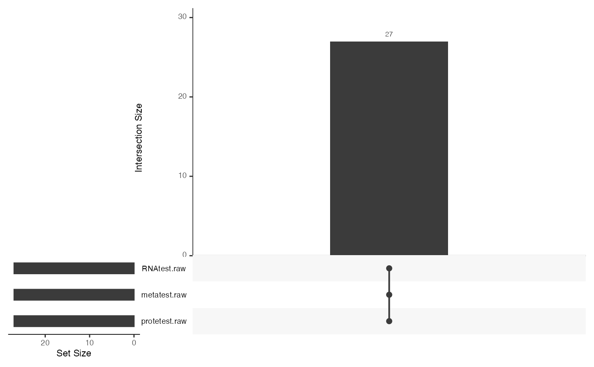
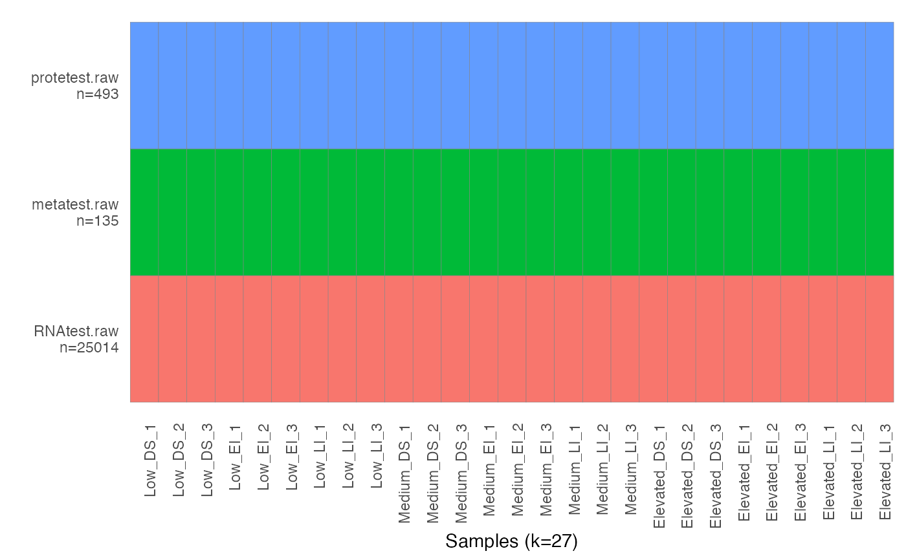
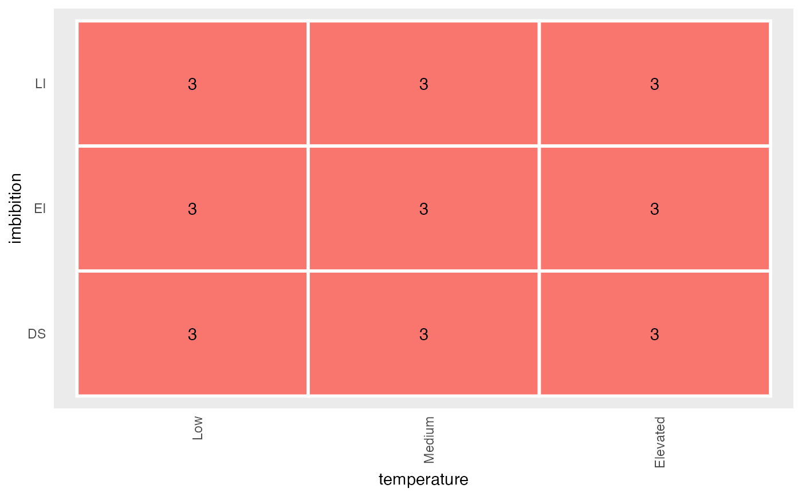

RflomicsMAE-class.RdRflomicsMAE is a class that extends the MultiAssayExperiment class by imposing a structure to the metadata slot. This class is used by the Rflomics analysis workflow to store the experimental design, the settings and results of a multi-omics integration analysis.
# S4 method for RflomicsMAE
getProjectName(object)
# S4 method for RflomicsMAE
getDesignMat(object)
# S4 method for RflomicsMAE
getDatasetNames(object)
# S4 method for RflomicsMAE
getOmicsTypes(object)
# S4 method for RflomicsMAE
getFactorNames(object)
# S4 method for RflomicsMAE
getFactorTypes(object)
# S4 method for RflomicsMAE
getBioFactors(object)
# S4 method for RflomicsMAE
getBatchFactors(object)
# S4 method for RflomicsMAE
getMetaFactors(object)
# S4 method for RflomicsMAE
getRflomicsSE(object, datasetName = NULL)
# S4 method for RflomicsMAE
getFactorModalities(object, factorName)
# S4 method for RflomicsMAE
subRflomicsMAE(object, omicNames = NULL)
# S4 method for RflomicsMAE
plotDataOverview(object, omicNames = NULL, realSize = FALSE)
# S4 method for RflomicsMAE
plotConditionsOverview(object, omicNames = NULL)An object of class RflomicsMAE-class
the name of the RflomicsSE to retrieve
factor name
a vector with dataset names
booleen value
A RflomicsMAE object.
ExperimentList:
A ExperimentList class object of RflomicsSE object for each assay dataset
colData: see MultiAssayExperiment
sampleMap: see MultiAssayExperiment
metadata:
projectName: string. Project name.
omicList: list. Contains the list of omics datasets, with the type and name.
design: The experimental design.
IntegrationAnalysis: A list containing the multi-omics integration analysis settings and results.
design: The experimental design
sessionInfo:
IntegrationAnalysis: A list containing the multi-omics integration analysis settings and results.
getProjectName: return a string with the name of the project
getDesignMat: return a data.frame with experimental design.
getDatasetNames: return a vector with dataset names.
getOmicsTypes: return a named vector with omics type of each dataset ("RNAseq", "proteomics", "metabolomics")
getFactorNames: return a vector with the experimental factor names.
getFactorTypes: return a named vector with experimental factor types ("bio", "batch" or "meta").
getBioFactors: return a vector with the biological factor names.
getBatchFactors: return a vector with the batch factor names.
getMetaFactors: return a vector with the metadata factor names.
getRflomicsSE: return a RflomicsSE object with selected dataset
getFactorModalities: return a vector with the modality names of selected factor.
subRflomicsMAE: return a RflomicsMAE-class object with selected datasets.
plotDataOverview: This function plot an overview of the loaded datasets displaying per sample (n=number of entities (genes/metabolites/proteins); k=number of samples)
plotConditionsOverview: A complete design and at least one biological and one batch factors are required for using RFLOMICS workflow.
generateModelFormulae
generateExpressionContrast
runDataProcessing
runDataProcessing
runDiffAnalysis
runCoExpression
runAnnotationEnrichment
# load ecoseed data
data(ecoseed)
# create rflomicsMAE object with ecoseed data
MAE <- RFLOMICS::createRflomicsMAE(
projectName = "Tests",
omicsData = list(ecoseed$RNAtest, ecoseed$metatest, ecoseed$protetest),
omicsNames = c("RNAtest", "metatest", "protetest"),
omicsTypes = c("RNAseq","metabolomics","proteomics"),
ExpDesign = ecoseed$design,
factorRef = ecoseed$factorRef)
# generate upset plot
MultiAssayExperiment::upsetSamples(MAE)

# generate data overview plot
plotDataOverview(MAE)

# generate plot of coverage of condition by data
plotConditionsOverview(MAE)

# See createRflomicsMAE for an example that includes plotDataOverview
# See createRflomicsMAE for an example that includes plotConditionsOverview